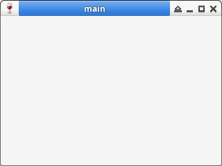

Steward
分享是一種喜悅、更是一種幸福
程式語言 - Wine - Assembly (ARM 32) - Dialog - Handle Event
參考資訊：
http://www.winprog.org/tutorial/start.html
https://learn.microsoft.com/en-us/windows/win32/api/winuser/nf-winuser-messagebox
一般在建立Windows視窗時，會註冊自定義的Class並且設定事件處理的副程式(callback)，不過，目前範例使用的Class是系統預設的WC_DIALOG，因此，可以透過SetWindowLong()設定callback，這種替換callback的行為就稱為Subclass，意指為原本Class的Subclass，所以Subclass後，需要將原先callback的位址(SetWindowLong()的回傳值)保存下來，然後透過呼叫CallWindowProc()(傳入原先callback的位址)，用來將處理控制權移交回原先視窗元件，所以當有多層Subclass的情形發生時，每次在處理事件時，記得判斷對應的Handle，如：在處理關閉事件時(WM_CLOSE)，會先判斷目前的hWnd是否為當前的視窗hWnd，如果是當前視窗hWnd，才進行關閉的動作，避免關閉到其它視窗元件
main.S
.global WinMain
.equiv GWL_WNDPROC, -4
.equiv WC_DIALOG, 0x8002
.equiv WM_DESTROY, 2
.equiv WM_CLOSE, 0x10
.equiv WS_OVERLAPPED, 0
.equiv WS_CAPTION, 0xc00000
.equiv WS_SYSMENU, 0x80000
.equiv WS_THICKFRAME, 0x40000
.equiv WS_MINIMIZEBOX, 0x20000
.equiv WS_MAXIMIZEBOX, 0x10000
.equiv WS_VISIBLE, 0x10000000
.equiv WS_EX_LEFT, 0x00000000
.equiv WS_OVERLAPPEDWINDOW, (WS_OVERLAPPED | WS_CAPTION | WS_SYSMENU | WS_THICKFRAME | WS_MINIMIZEBOX | WS_MAXIMIZEBOX)
.data
hWin: .skip 4
szMsg: .skip 28
szAppName: .asciz "main"
pDefWndProc: .skip 4
.text
WndProc:
push { lr }
cmp r1, #WM_CLOSE
beq handle_close
cmp r1, #WM_DESTROY
beq handle_destroy
b handle_default
handle_close:
bl DestroyWindow
eor r0, r0
b finish
handle_destroy:
ldr r0, =0
bl PostQuitMessage
eor r0, r0
b finish
handle_default:
push { r3 }
mov r3, r2
mov r2, r1
mov r1, r0
ldr r0, =pDefWndProc
ldr r0, [r0]
bl CallWindowProcA
add sp, sp, #4
b finish
finish:
pop { pc }
WinMain:
push { lr }
ldr r3, =0
ldr r2, =0
ldr r1, =0
ldr r0, =0
push { r0, r1, r2, r3 }
ldr r3, =300
ldr r2, =300
ldr r1, =0
ldr r0, =0
push { r0, r1, r2, r3 }
ldr r3, =WS_OVERLAPPEDWINDOW | WS_VISIBLE
ldr r2, =szAppName
ldr r1, =WC_DIALOG
ldr r0, =WS_EX_LEFT
bl CreateWindowExA
add sp, sp, #32
ldr r1, =hWin
str r0, [r1]
ldr r2, =WndProc
ldr r1, =GWL_WNDPROC
bl SetWindowLongA
ldr r1, =pDefWndProc
str r0, [r1]
loop:
ldr r3, =0
ldr r2, =0
ldr r1, =0
ldr r0, =szMsg
bl GetMessageA
cmp r0, #0
beq exit
ldr r0, =szMsg
bl DispatchMessageA
b loop
exit:
pop { pc }
編譯、執行
$ winegcc-armhf -b arm-linux-gnueabihf main.S -o main.exe $ WINEPREFIX=~/.wine_arm32 myarm32 main.exe.so
